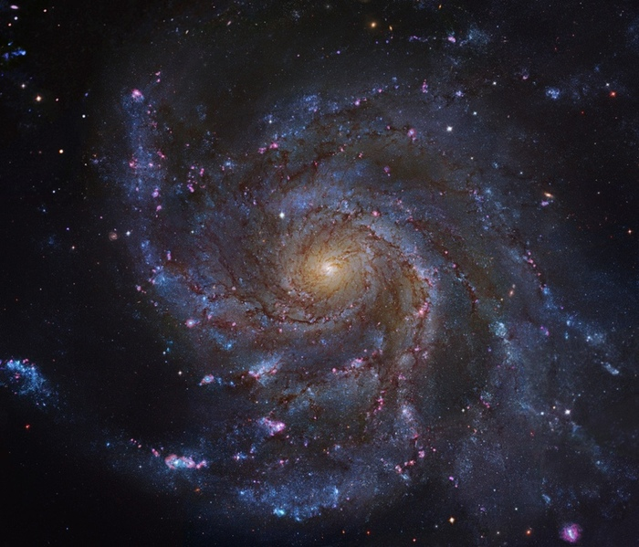

Галактики. Коротко, о главном.
Статья сделана сообществом ВКонтакте - Перигей | Астрономия
Ссылка на сообщество Мы тут
Экскурс - Данная статья не является научной диссертацией, и имеет много пропусков научных терминов и упрощений. Статья предназначена для легкого, быстрого прочтения, и с исходом понимания - что такое Галактики. Всем приятного чтения.
Галактики. Коротко, о главном.
Каждый раз когда мы слышим слово «Галактика», в голове сразу же появляются виды закрученного в спираль потока звезд. Они яркие, цветные, светящиеся.
Более продвинутые в плане астрономии люди, расскажут про то, что на небе мы можем увидеть часть свой галактики «Млечный путь», что так же на этом же небе есть еще и галактика «Андромеда», наш сосед.
И это же все верно! Но, как-то слишком мало. Кто это вообще такие? Какие они бывают? От чего зависит их цвет, форма. А различна ли вообще их форма и цвет? На все эти часто задаваемые вопросы, мы постараемся ответить, впечатлить вас и показать вам что-то новое. Начнем.
Происхождение Галактик.
Галактика — гравитационно-связанная система из звезд, звездных скоплений, межзвездного газа и пыли, темной материи и планет. Простым языком, это скопление космических объектов, которые вращаются вокруг общего центра масс.
И все же, как рождаются галактики? Все началось еще очень давно.
Текущие научные открытия говорят о том, что вся материя во Вселенной была создана примерно 13,8 миллиарда лет назад во время Большого Взрыва. Изначально же вся материя была сжата в очень маленький шарик с бесконечной плотностью и огромной температурой, это и есть сингулярность. Вдруг сингулярность начала расширяться, как раз 13,8 миллиарда лет. Так и началась Вселенная. После быстрого расширения и охлаждения все вещество было почти равномерно распределено по вселенной. В течение нескольких миллиардов лет более плотные участки Вселенной стали притягиваться друг к другу. Поэтому они стали плотнее, образовав газовые облака и большие сгустки материи.
Облака водорода и других газов внутри самых первых, протогалактик, начали коллапсировать, чтобы стать первыми звездами. Некоторые из этих ранних объектов были крошечными карликовыми галактиками, в то время как другие приняли привычную спиральную форму, как и наш Млечный Путь.
Структура вселенной.
При этом, галактики не просто поглощают друг друга, они начинают скапливаться в целые кластеры галактик. Они называются скоплениями галактик. Наше скопление галактик это — местная группа: В нее входят более 50 галактик, которая делится на четыре подгруппы:
- Подгруппа Млечного пути - состоит из гигантской спиральной галактики Млечный путь и 14 её известных спутников (по состоянию на 2005 год), представляющих собой карликовые и в основном неправильные (по форме) галактики;
- Подгруппа Треугольника— галактика Треугольника и её возможные спутники;
- Прочие карликовые галактики, которые нельзя определить ни в одну из указанных подгрупп.
- Подгруппа Андромеды — весьма похожа на подгруппу Млечного Пути: в центре подгруппы находится гигантская спиральная галактика Андромеды. Её 18 известных (по состоянию на 2005 год) спутников тоже являются в основном карликовыми галактиками;;
Формы галактик
В далеком начале 20 века, астрономы всего мира так и не могли определиться, являются ли те странные закрученные объекты на небе частью нашей галактики, или же это что-то иное. И тогда выдающийся ученый своего времени Эдвин Хаббл перевернул мир астрономии с ног на голову, доказав, что это не туманности, а отдельные галактики, такие же как наша.
Классификация:
- Эллиптическая галактика.
- По этой ссылки Эллиптическая галактика вы пройдете к изображению этой галактике
- Линзовидная галактика
- По этой ссылки Линзовидная галактика вы пройдете к изображению этой галактике
- Спиральная галактика с перемычкой
- По этой ссылки Спиральная галактика с перемычкой вы пройдете к изображению этой галактике
- Неправильная галактика
- По этой ссылки Неправильная галактика вы пройдете к изображению этой галактике